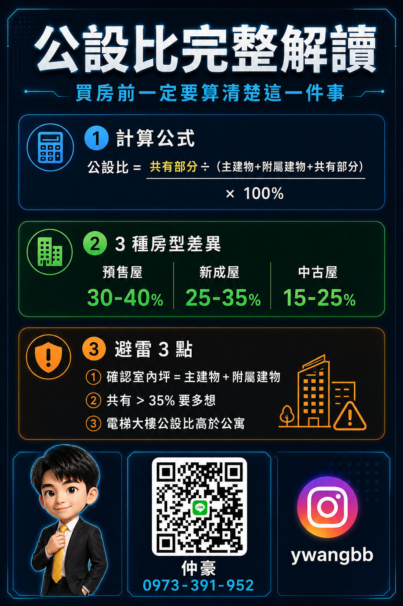

直球揭秘
Direct Knowledge
9 部
▼
#01
賣房稅費這 3 個數字，你算過嗎？
賣房前要算清楚土地增值稅、房地合一稅、仲介費，沒算清楚實拿的錢會少很多。
時間軸
0-3s
賣房之前，這 3 個數字你有沒有算過？
3-12s
第一個是土地增值稅，第二個是房地合一稅，第三個是仲介費。這 3 個加起來，客戶一算都會說：這麼多？
12-25s
房地合一的部分，持有年限不同稅率差不少，自用住宅有優惠，但條件要符合。
25-40s
上個月有個客戶，一算稅費，實拿的少了好幾百萬。
40-52s
賣之前，先算。這 3 個數字搞清楚，到時候才不會被自己的計算震到，OK嗎？
52-60s
CTA：留言稅費，仲豪私訊給你用 maskbago 試算一次，都免費，問就對了。
#02
看屋當天我都在看什麼，客戶不知道
帶看時偷偷看漏水痕跡、敲牆壁、開窗門、看外牆裂縫，漂亮不等於安全。
時間軸
0-3s
帶你們看屋的時候，我在偷偷看的東西，你們根本不知道。
3-12s
第一個：看漏水痕跡，天花板邊角、窗框下面。第二個：聽牆壁，敲一敲。
12-25s
第三個：開每一扇窗戶和門。第四個：站在陽台看外牆。
25-40s
漂亮不等於安全，懂我的意思？
40-52s
下次帶看，你可以自己先確認這 4 件事，再問我細節。
52-60s
CTA：有想看屋但不知道怎麼問，留言帶看，仲豪跟你聊，都免費，問就對了。
#08
實價登錄怎麼查，5 步驟學起來
5步驟學會查實價登錄：找網站、選地區、設條件、看單價、看日期判趨勢。
時間軸
0-3s
實價登錄怎麼查，我拆成 5 步驟，2 分鐘學起來。
3-12s
第一步：搜尋內政部不動產交易實價查詢服務，找官方網站。第二步：選你要查的地區。
12-25s
第三步：設條件，時間範圍建議查近 1 年。第四步：看每筆的單價而不是總價。
25-40s
第五步：注意成交日期，登錄有時間差，要判斷的是趨勢，不是一筆數字。
40-52s
這 5 步做完，你對這個區域的行情就有基本概念了。
52-60s
CTA：有興趣的物件不知道怎麼評估，留言實價，仲豪私訊給你分析，都免費，問就對了。
#11
新青安快到的人，問一下 3 件事
寬限期結束月付直接跳，現在要試算期後月付、評估提前還款、確認換貸條件。
時間軸
0-3s
寬限期的時候，月付輕鬆；寬限期一過，同一筆房貸，月付直接跳。
3-12s
新青安有 5 年寬限期，用的人很多，但準備好面對期後月付的，才知道有沒有撐住的空間。
12-25s
現在就要做 3 件事：試算寬限期後的月付、評估有沒有能力提前還本金、確認你的合約有沒有換貸條件。
25-40s
寬限期不是永遠，只是讓你緩一口氣用的，OK嗎？
40-52s
想知道你的狀況怎麼規劃，留言青安，仲豪私訊給你，都免費，問就對了。
#12
議價這件事，客戶最大的誤解
砍太狠賣方關窗；留台階賣方回來繼續談。同一間房，出價方式不同，結果差一個月。
時間軸
0-3s
同一間房子，出價方式不同，結果差一個月。
3-12s
我有個客戶，第一次出價砍很狠，賣方直接不回應，窗關了。
12-25s
後來我讓客戶重新出一個有留台階的價格，結果賣方回來了，繼續談，最後成了。
25-40s
議價是藝術，不是在比誰開價低，是在比誰懂市場，懂人。
40-52s
出價越狠不等於買到越便宜，OK嗎？
52-60s
CTA：對物件有興趣想了解怎麼出價，留言議價，仲豪跟你聊，都免費，問就對了。
#15
maskbago 的稅務試算，我實際給你看一次
沒算稅就設底價是在瞎談。用 maskbago 先試算稅費量級，底價設合理，談的時候心裡有底。
時間軸
0-3s
同樣一間房子，賣之前沒算稅和先算過稅，賣完手上剩的錢，差距可以很大。
3-12s
先算稅的情況：用 maskbago 輸入買入賣出價格和持有年限，先知道稅費量級，底價設合理。
12-25s
沒算稅就設底價，真的是在瞎談！工具是免費的，你用 2 分鐘就能試。
25-40s
算過再談，不等於一定談得更好，但至少不是瞎談，OK嗎？
40-52s
想試用的留言 67，仲豪把連結傳你，都免費，問就對了。
#17
開價跟市場價的差，你知道嗎？
4 步判斷開價合不合理：記住開價、查實價登錄、比差距、看條件能否解釋差距。
時間軸
0-3s
看到一間房子的開價，4 個步驟判斷它合不合理，學起來。
3-12s
第一步，記住開價和地址。第二步，去查同社區或同路段近 1 年的實價登錄。
12-25s
第三步，比對開價和成交行情的差距。差距越大，談判空間越大。
25-40s
第四步，看這個物件的條件解釋得了這個差距嗎？有理由貴是一回事，沒理由，就是你的籌碼。
40-52s
有物件不知道怎麼判斷，留言行情，仲豪私訊給你分析，都免費，問就對了。
#104
你問我高雄哪裡值得買，我說不一定
問「高雄哪裡值得買」之前先問自己：自住？通勤？學區？短期賣掉？答案完全不一樣。
時間軸
0-3s
問我高雄哪裡值得買，我通常不直接回答。
3-12s
因為「值得買」這三個字，對每個人的意思完全不一樣。你是自住？通勤？學區？還是你打算五年後賣掉？
12-25s
高雄很大，中都有中都的邏輯，仁武有仁武的邏輯，前鎮有前鎮的邏輯。你說高雄哪裡好，就像問台灣哪家餐廳好吃，要先問你要吃什麼。
25-40s
我不是要賣你特定哪個區。我是說，你要先知道你的條件，然後我才能幫你縮到 2-3 個適合的地方。
40-52s
條件對了，看 5 間就夠。條件沒想清楚，看 50 間你還是猶豫。
52-60s
留言「區域」，仲豪問你幾個問題，幫你縮範圍，OK嗎？不用怕，問問不用錢。
#高雄房地產#買房#高雄#看房#房仲分享#不動產#首購族#購屋#房市觀察#知識型短影音
#109
貸款成數這件事，你以為跟銀行談，其實不是
貸款成數主要看第幾戶、收入負債比、銀行估價——估價落差要自己補。下斡旋前先讓銀行預估一次。
時間軸
0-3s
很多人以為貸款成數是跟銀行談出來的，這個觀念本身就有問題。
3-12s
貸款成數，主要看三件事：第一，你是第幾戶。第二，你的收入負債比。第三，房子本身的估價。
12-25s
最多人忽略的是估價這一塊。就算你開價 1,000 萬成交，銀行估 850 萬，你實際貸款是用 850 萬算，不是 1,000 萬。這個差額叫「估價落差」，要從自己口袋補。
25-40s
所以在下斡旋之前，最好先讓銀行預估一次，知道你能貸多少、每月月付是多少，你才知道這個房子你真的出得起。
40-52s
貸款順序做對，才不會買了房還在補缺口，手忙腳亂。
52-60s
留言「貸款」，仲豪幫你整理你的狀況，讓你下手前已經心裡有數，OK嗎？不用怕，問問不用錢。
#房貸#貸款#買房#首購族#高雄房地產#財商#不動產#購屋#知識型短影音#房地產知識
人間觀察
Human Observations
8 部
▼
#06
中都這個區，我說真的
有夫妻預算到了才看中都，進來一看比想像好很多。老社區、停車需注意，但學區近、生活踏實。
時間軸
0-3s
有一對夫妻，來看中都的房子，看完第一句話說：這裡比我想的好很多。
3-12s
他們本來沒打算看中都，是預算到了才過來。進來一看，重南路這一帶，生活機能齊全，巷弄安靜。
12-25s
中都老社區多，中古屋為主，停車位要留意，老公寓有些沒電梯。
25-40s
他們最後選了這裡，說：不是退而求其次，是找到真的適合我們的。
40-52s
中都不是最熱門的，但有些人看了會留下來，值得進來看一眼，OK嗎？
52-60s
CTA：對中都有興趣，留言中都，仲豪私訊跟你聊，都免費，問就對了。
#07
同齡的你，到底在等什麼才要買？
朋友等了 7 年，第一年等存款、第三年等降息、第五年等房價跌、第七年等工作穩——每年都有理由。
時間軸
0-3s
有個跟我同齡的朋友，等了整整 7 年才開始認真看房。
3-12s
他第一年說等存夠頭期款，第三年說等降息，第五年說等房價跌，第七年說等工作更穩。
12-25s
上個月他來找我，評估完他說：我這些狀況，3 年前就可以開始了。
25-40s
他說：那 3 年，我是在等一個不會自動出現的時機。拖著不了解，才是真正的風險。
40-52s
拖著不了解，才是真正的風險所在，OK嗎？
52-60s
CTA：想搞清楚自己的狀況，留言評估，仲豪跟你聊，都免費，問就對了。
#09
我哥問我：買新成屋還是中古屋？
這問題本身就問錯了——要先問自備款、屋況還是地段、有沒有裝修預算，答案自然出來。
時間軸
0-3s
我哥昨天問我：買新成屋還是中古屋比較好？我跟他這樣說。
3-12s
我說這個問題本身就問錯了。你要先問的是：你的自備款多少、你要的是屋況還是地段、你有沒有裝修預算。
12-25s
新成屋好處是屋況好、公共設施完整，但坪數費用較高。中古屋優點是地段更靈活，但裝修費用要估進去。
25-40s
我哥問我：那你覺得哪個比較好？我說，看你的條件，不是每個人答案都一樣。
40-52s
問對問題，才能有對的答案，OK嗎？
52-60s
CTA：有疑問的留言問我，仲豪來跟你分析，都免費，問就對了。
#10
看屋跑了半年沒成交，問題不是房子
帶一對夫妻看了半年一間沒成，原來兩人各有不同版本的理想房子，找到交集的那天，下一間看的就下訂了。
時間軸
0-3s
有一對夫妻，我陪他們看了半年的房子，一間都沒成。
3-12s
每次看完，太太說這間採光不夠，先生說那間停車太麻煩。
12-25s
後來我才搞清楚：他們心裡各自有一個完全不同版本的理想房子，但從來沒有跟對方說清楚過。
25-40s
我讓他們各自列出 3 個死線，非有不可的條件，再找交集。找到交集的那天，下一間看的就下訂了。
40-52s
看很久沒成，問題不一定在房子，OK嗎？
52-60s
CTA：有在看房但看不到對的，留言方向，仲豪跟你聊，都免費，問就對了。
#16
你有沒有遇過這種屋主？
帶看前一天屋主說不賣了，原來是被朋友說現在不急影響。屋主的猶豫不是不想賣，是沒有人真的聽他說。
時間軸
0-3s
你有沒有遇過這種屋主：帶看的前一天，說不賣了。
3-12s
我帶著客戶、確認好了時間，前一天晚上屋主傳訊息說我在考慮一下。
12-25s
後來我才知道，屋主是因為朋友說現在不用急，價格會繼續漲。
25-40s
我說你跟我說你現在的狀況是什麼，我幫你看這個決定對不對。他沉默了一下，說好，我跟你說說。
40-52s
很多時候，業主的猶豫不是不想賣，是沒有人真的聽他說，OK嗎？
52-60s
CTA：有在考慮賣房但還沒想清楚，留言猶豫，仲豪跟你聊聊，都免費，問就對了。
#19
不是每個人都適合現在買
客戶說她準備好了要買，但剛換工作試用期、感情不確定、存款沒緩衝金。三個月後她回來說：現在準備好了。
時間軸
0-3s
有個客戶來找我，說她準備好了，想買了。
3-12s
我跟她聊了一下，她說她最近剛換工作，試用期三個月，收入還不穩；感情剛起步；存款有頭期款，但沒有緩衝金。
12-25s
她說，但周圍的朋友都買了，我是不是也要買？我說，你跟我說的這三件事，你告訴我你準備好了嗎？
25-40s
三個月後她回來，說現在準備好了。
40-52s
不是每個人都適合現在買，但每個人都適合搞清楚自己的狀況，OK嗎？
52-60s
CTA：不確定自己現在適不適合，留言時機，仲豪跟你分析，都免費，問就對了。
#103
有些事，你不一定要懂
帶看這些年，看到有人想太多不敢買，有人衝動出手反而住得很好。你不用懂房市，你只要懂你自己。
時間軸
0-3s
有些事你不一定要懂，但你要知道它存在。
3-12s
我帶看這些年，看過最多的不是房子，是人在做決定的樣子。有人想太多，一直查資料，最後還是不敢買。有人完全沒想，衝動出手，後來反而住得很好。
12-25s
沒有誰是對的。只是每個人準備好的方式不一樣。
25-40s
「懂」這件事，不是把所有資訊看完。是知道自己在意什麼，然後從那裡開始。
40-52s
你不用懂房市，你只要懂你自己。
52-60s
（無 CTA）
#買房#房仲分享#房仲日常#正能量#高雄房地產#人生觀察#知識型短影音#購屋
#113
高雄中都區，我說幾個你不一定知道的事
中都濕地側vs商圈側、老屋翻新、交通問題——中都不是最熱的區，但有些人進來看完會留下來。
時間軸
0-3s
我在中都這個區做了幾年，有幾件事想跟你說清楚。
3-12s
中都濕地公園跟中都商圈是兩個不同的磁場。靠濕地側的物件，步行距離跟綠景加分不少。靠商圈側，生活機能強，但吵。
12-25s
中都旁邊的中華藝校商圈，這幾年老屋翻新比率在增加。不是熱門討論的區域，但有些案子的性價比比預期高。
25-40s
這個區的交通如果你是開車族，就很順。如果你靠大眾運輸，要看清楚最後一哩的問題。
40-52s
中都不是最熱的區，但不等於不值得考慮。關鍵是你的條件對不對這裡。
52-60s
對中都或周邊物件有興趣的，留言「中都」，仲豪帶你去看幾間，OK嗎？不用怕，問問不用錢。
#高雄#中都#高雄房地產#買房#看房#不動產#購屋#在地觀察#房仲分享#知識型短影音
共鳴痛點 / 嗆辣派
Resonance & Spicy
4 部
▼
#03
首購族貸款踩的 3 個地雷，我都見過
寬限期用完月付跳、貸款成數高估、只問利率忘了問年限——不是房子的問題，是資金規劃的問題。
時間軸
0-3s
首購族申請房貸，這 3 個地雷我有太多客戶踩過。
3-12s
第一個，寬限期用完就措手不及。第二個，貸款成數高估。第三個，只問利率忘了問年限。
12-25s
我有個同齡客戶，自備款存了 2 年，結果因為信用評分不足，貸款成數不夠，他就買不成。
25-40s
這 3 個地雷，不是房子的問題，是資金規劃的問題。搞清楚你的資金狀況，再去看房，OK嗎？
40-52s
想評估你自己的貸款資格，留言房貸，仲豪私訊給你分析，都免費，問就對了。
#14
賣房前，你有沒有先問過自己這 3 個問題
稅算過了嗎？底價算清楚了嗎？賣了之後住哪裡？3 個問題是要你賣得有把握。
時間軸
0-3s
準備賣房的人，這 3 個問題，你自己問過了嗎？
3-12s
第一個：你的房地合一稅算過了嗎？第二個：你的底價算清楚了嗎？
12-25s
第三個：賣了之後，你要去哪？先賣後買，中間的空窗期有沒有安排好？
25-40s
這 3 個問題不是要你害怕賣，是要你賣得有把握，OK嗎？
40-52s
想賣房但還有疑問，留言賣房，仲豪私訊給你，都免費，問就對了。
#18
你準備好頭期款了，然後呢？
頭期款之外還要準備契稅、代書費、謄本費、過戶規費，加搬家費和裝修預算，全部算進去才是真的夠。
時間軸
0-3s
頭期款存夠了，然後呢？我看不少人準備到頭期款就以為萬事俱備了。
3-12s
頭期款之外，你還要準備的有：契稅、代書費、謄本費、過戶規費。
12-25s
還有搬家費、裝修預算。如果買的是中古屋，這些都要提前估進去。
25-40s
最常見的情況是，以為存到頭期款就夠了，結果過戶的時候很窘。
40-52s
買房預算不是只有頭期款，是頭期款加上所有附帶費用，全部算進去，才知道你真的夠不夠，OK嗎？
52-60s
CTA：想確認自己的預算狀況，留言預算，仲豪私訊給你估算，都免費，問就對了。
#107
你存了頭期款，然後呢？沒有然後才恐怖
頭期款存再多，貸多少、月付壓不壓得住、稅費怎麼算，這些沒搞清楚，就只是在原地等。
時間軸
0-3s
你存了頭期款，然後呢？大部分人沒有然後，這才是真正的問題。
3-12s
你知道頭期款多少才夠嗎？你知道你貸款能貸多少嗎？你知道每個月月付壓不壓得住嗎？這三個問題你沒有答案，頭期款存再多都是白存。
12-25s
很多人存錢很認真，但從來沒有認真算過自己的購屋能力。頭期款只是第一個關卡，後面還有貸款成數、月付能力、稅費這些要過。
25-40s
先知道自己能買什麼，再去找什麼——這個順序對了，你看房的時候才不會一直覺得「都買不起」。
40-52s
你不是買不起，你只是還沒算清楚。
52-60s
留言「算」，仲豪幫你算月付跟貸款，不用你自己慢慢查，OK嗎？不用怕，問問不用錢。
#買房#頭期款#房貸#首購族#高雄房地產#財商#購屋#買房焦慮#知識型短影音#不動產
故事 / 自嘲反差
Story & Self-Irony
4 部
▼
#04
我做房仲最大的笑話
以為量多就是機會多，帶客戶看了 15 間，最後一間沒成。現在先聊清楚需求，才帶最對的幾間。
時間軸
0-3s
我做房仲最大的笑話，是我以為介紹最多房子的人就是最強的業務。
3-12s
剛入行的時候，我什麼房子都帶，覺得量多就是機會多，結果每天很忙，成交很少。
12-25s
後來我才搞清楚，帶錯客人看錯房，是在浪費彼此的時間。要先花時間搞懂客人要什麼。
25-40s
更好笑的是，我帶一個客戶看了 15 間，他最後說謝謝你，我決定不買了。
40-52s
所以我現在都是先聊，搞清楚你的狀況，才帶你看最對的幾間，不搞無效帶看，OK嗎？
52-60s
CTA：有想買房但不知道從哪裡開始，留言聊聊，仲豪私訊給你，都免費，問就對了。
#13
如果可以重新來，我第一年就這樣做
第一年最想改的 3 件事：少打 cold call 先懂市場；早點學問問題不猜；被拒絕了隔天繼續出現。
時間軸
0-3s
如果可以重新來，房仲第一年我最想改的 3 件事。
3-12s
第一件：少打 cold call，多去走路段、認物件。懂市場，才能讓人繼續聽你說。
12-25s
第二件：早點學問問題，不要猜。直接問清楚，比猜測省時 10 倍。
25-40s
第三件：被拒絕了，隔天繼續出現。第一年沒成交，很容易就躲起來。
40-52s
說這些不是要你複製我的路，是讓你少走一點彎路，OK嗎？
52-60s
CTA：有在考慮做房仲或剛入行不久，留言入行，仲豪跟你聊聊，都免費，問就對了。
#101
客戶反悔那天我說了什麼
客戶看了快 20 間，簽約前一晚說家人反對，我沒有催他。問了一個問題，三秒沉默之後，他說：我還是要買。
時間軸
0-3s
客戶跟我說「對不起，我不買了」的那天，我沒有催他。
3-12s
他看了快 20 間，最後選的那棟，開價說好，簽約前一晚發訊息說家人反對。我知道他沒有真的想放棄。
12-25s
我就問他一個問題：「如果你一個人決定，你還會買嗎？」他沉默了三秒，說「會」。
25-40s
後來我幫他約了家人一起看一次，把他們擔心的三個點——格局、採光、停車——一個個講清楚。那對父母當場改口。最後順利交屋。
40-52s
房仲不是賣房子，是幫人做到那個決定。
52-60s
如果你現在也在猶豫，或者家人有意見，留言「仲豪」，我跟你聊聊，OK嗎？不用怕，問問不用錢。
#房仲日常#買房#看房#房地產#首購族#高雄房地產#房仲分享#購屋#知識型短影音#買房焦慮
#102
三十歲存的那筆錢，我拿去幹嘛了
存了一筆錢，買了一堆寶可夢卡。重點是身邊每個三十歲的人存的錢都在等——等房價跌、等準備好。
時間軸
0-3s
我三十歲以前存了一筆錢，沒買房。
3-12s
買了一堆寶可夢卡。現在不後悔，因為現在它值更多。不過這不是重點。
12-25s
重點是我身邊每個三十歲的人，存的錢都在做一件事——等。等房價跌，等利率降，等準備好再買。然後等著等著，頭期款跟不上漲幅了。
25-40s
不是說你現在一定要買。但「等準備好」跟「現在開始算清楚自己能買什麼」，是完全不一樣的兩件事。
40-52s
不知道從哪裡開始算，這才是大多數人卡住的地方。
52-60s
留言「算」，仲豪把你的狀況問清楚，幫你算第一步，OK嗎？不用怕，問問不用錢。
#買房#首購族#30歲#存錢#房地產#高雄房地產#財商#購屋#買房焦慮#知識型短影音
圖卡部
Card Library
2 部
▼
#05
過戶給家人 3 種方式，哪個省最多？
買賣、贈與、繼承——選錯方式多繳幾十萬是真實案例。完整對照表留言取得。
時間軸
0-3s
房子要過戶給家人，到底哪一種方式最省？這個問題很多人答錯。
3-12s
可以選的方式有三種：買賣、贈與、繼承。每一種的稅費和條件都不一樣，選錯方式，多繳幾十萬是真實案例。
12-25s
很多人以為繼承免稅，但繼承要等到發生，有沒有你決定不了。贈與稅有免稅額度上限，超過就要繳。
25-40s
選哪種，取決於你的持有年限、你跟受贈人的關係、還有你們的所得狀況。
40-52s
我整理了一份完整的對照表，3 種方式的稅費差異、適合誰，都在裡面。
52-60s
底下留言過戶，仲豪私訊給你完整解答，都免費，問就對了。

{kind=link}
#112
公設比這件事，你買房前算過嗎？
同樣 30 坪，公設比差 20%，實際室內坪數差將近一個小房間——完整解答在私訊圖卡。
時間軸
0-3s
公設比這件事，很多人買了房才知道自己買到多少，已經來不及了。
3-12s
公設比決定你實際住的空間有多大。同樣 30 坪，公設比 35% 跟公設比 15%，你實際室內坪數差了快 6 坪。6 坪是一個小房間。
12-25s
問題是，台灣目前沒有強制規定公設比上限。預售屋、新成屋、中古屋計算方式又不同。你知道怎麼算、哪種狀況公設比比較低嗎？
25-40s
這些細節，我整理成一張清單，包含計算公式、3 種房型差異、怎麼避開高公設比的雷。
40-52s
完整解答我放在私訊裡，因為細節太多文字說清楚比影片更好查。
52-60s
留言「公設」，仲豪把清單私訊給你，OK嗎？
#公設比#買房#房地產知識#首購族#高雄房地產#看房#不動產#購屋#房仲教學#知識型短影音
純雞湯
Soul Food
2 部
▼
#20
你還在嗎，就一件事
每個在找房子的人都很累，首購族累、換屋族也累。不需要很快，但要繼續。你還在嗎？那就夠了。
時間軸
0-3s
最近有沒有一件事，讓你覺得真的很累，但還是撐下來了？
3-12s
我做這行，遇到很多在挑房子的人，他們輕鬆的很少。首購族累，換屋族也累。
12-25s
但大多數人，最後都做到了。不是因為他們特別厲害，是因為他們沒有在最難的時候放棄找答案。
25-40s
你如果現在正在某一個很累的階段，沒關係，繼續找你要的答案就好。不需要很快，但要繼續。
40-52s
你還在嗎？那就夠了，OK嗎？
52-60s
（無硬 CTA，如果你有想聊的，都可以。）
#103
有些事，你不一定要懂
帶看這些年，看到有人想太多不敢買，有人衝動出手反而住得很好。你不用懂房市，你只要懂你自己。
時間軸
0-3s
有些事你不一定要懂，但你要知道它存在。
3-12s
我帶看這些年，看過最多的不是房子，是人在做決定的樣子。有人想太多，一直查資料，最後還是不敢買。有人完全沒想，衝動出手，後來反而住得很好。
12-25s
沒有誰是對的。只是每個人準備好的方式不一樣。
25-40s
「懂」這件事，不是把所有資訊看完。是知道自己在意什麼，然後從那裡開始。
40-52s
你不用懂房市，你只要懂你自己。
52-60s
（無 CTA）
#買房#房仲分享#房仲日常#正能量#高雄房地產#人生觀察#知識型短影音#購屋
脆文 Threads
第 04 批 · 7 篇
7 posts
▼
客戶說「對不起，我不買了」。
大部分人聽到這句話會很慌。我習慣先問一句：
「你是真的不買了，還是有一件事還沒講清楚？」
沉默個三秒，他說出了真正的問題。
不是物件不好。是家人那關還沒過。
解決的是人，不是房子。
---
這種時候，你不需要催。你需要問。
留言告訴我你買房路上卡在哪一關。
#房仲日常 #買房 #購屋
「我買不起」這件事，有兩種。
一種是真的買不起——收入、頭期、月付都達不到。
另一種是以為買不起——但從來沒有認真算過自己能買的範圍。
大部分人是第二種。
---
算清楚需要三個數字：
自己能拿出的頭期款
能承擔的月付
目標區域均價
三個數字對齊，你才知道你在哪個位置。
不知道從哪算起，留言「算」，幫你把數字問清楚。
#買房 #首購族 #財商 #高雄房地產
買房前，最多人沒搞清楚的一件事：
銀行貸款不是用你的成交價算，是用銀行的估價算。
你出 1,000 萬，銀行估 880 萬——你的貸款上限是 880 萬，不是 1,000 萬。
差的那部分，自己補。
---
所以下斡旋之前，先讓銀行估一次，知道你能貸多少、月付是多少，才不會買了發現缺口太大。
有疑問的留言或私訊。不用怕，問問不用錢。
#房貸 #貸款 #買房 #首購族 #高雄房地產
帶看這幾年，我覺得最值得問屋主的一個問題是：
「你為什麼要賣？」
不是為了壓價，是為了知道背景。
工作調動要搬——代表有時間壓力，議價空間通常較大。
繼承的房——代表沒有心理價位包袱。
急著換屋——又是另一種節奏。
---
問出原因，你才知道怎麼跟屋主互動。
#看房 #買房 #房仲分享 #高雄房地產
做房仲有一個隱形的陷阱：
你以為帶看越多越好。
實際上，方向沒定好的帶看，是最消耗時間的事。
---
帶看前問清楚三件事：
你最在意什麼
你不能接受什麼
你願意讓步的點在哪裡
問完，帶看效率直接翻。
不知道自己要什麼，留言「問」幫你理清。
#房仲日常 #看房 #買房 #購屋
三十歲沒房子，不是失敗。
是還沒找到對的時間點和對的條件而已。
---
我看過很多人，二十幾歲衝動買了，後來後悔。
也看過很多人，三十幾歲算清楚再買，反而住得很踏實。
不是哪個年齡要買房，是你的數字到位的時候買房。
數字到位，是指你知道你現在能負擔什麼、你想住什麼樣的地方。
#買房 #首購族 #高雄房地產 #正能量
30 坪的房子，你實際住的是幾坪？
答案是：要看公設比。
公設比 35%，室內只有不到 20 坪。
公設比 15%，室內大很多。
---
這個數字，很多人買完才去算。
計算公式、3 種房型的差異、怎麼避開高公設比的雷——我整理好了。
留言「公設」，仲豪私訊給你。
#公設比 #買房 #房地產知識 #首購族 #高雄房地產